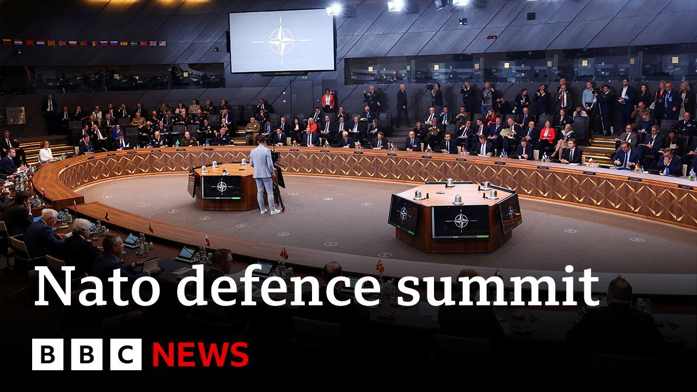

【北约领导人峰会讨论国防开支 | BBC新闻】
Summary: NATO foreign ministers meet in Brussels to negotiate increased military spending targets, with debates over percentages and timelines, amid US pressure for higher contributions.
摘要： 北约外长在布鲁塞尔会晤，商讨提高军费开支目标，围绕比例和时间表展开辩论，同时面临美国要求增加贡献的压力。

⏱️ Estimated Reading Time: 5 min
📚 高考3500生词 📚 雅思生词 📚 托福生词 📚 GRE生词 📚 UP主推荐生词
Welcome back.
欢迎回来。
In the past hour, NATO's foreign ministers have convened for a major meeting in Brussels, where the alliance is due to make a commitment to ramp up military spending.
过去一小时内，北约外长在布鲁塞尔召开重要会议，联盟将承诺增加军费开支。
By just how much, however, is still up for negotiation, and it will dominate talks today.
但具体增加多少仍在谈判中，这将是今天讨论的重点。
NATO chief Mark Ross is optimistic that ministers will sign off on spending 3 and a half% of GDP on core military needs and 1.5% on related expenses such as infrastructure and cyber security by 2032.
北约秘书长马克·罗斯乐观认为，部长们将同意到2032年将GDP的3.5%用于核心军事需求，1.5%用于基础设施和网络安全等相关支出。
So what we will do today is to decide what do we need to make it to for us to be able uh to whenever we would be attacked um to defend ourselves and by being able to defend ourselves not being attacked.
因此，我们今天要做的是决定需要什么，以便在我们可能遭受攻击时能够自卫，并通过能够自卫来避免遭受攻击。
So as you know um um to prepare for war spend more uh and when you are really prepared for war you will not you will not be attacked.
正如你所知，为战争做准备就要增加开支，而当你真正做好准备时，就不会遭受攻击。
um that will be uh a considerable extra investment uh and that's this is why I predict that Indie will decide on a much higher spending target for all the nations in NATO.
这将是一笔相当大的额外投资，因此我预测北约各国将决定一个更高的开支目标。
Mark Rutter there.
马克·拉特报道。
Well, let's cross over to speak to Jonathan Beiel our defense correspondent joining us from Brussels.
现在，让我们连线在布鲁塞尔的国防记者乔纳森·比尔。
And Jonathan, arguably spending dominating today's agenda, but when you've got countries, some countries like Poland spending committing to 5% next year, Italy only just hitting 2%, there's a lot to discuss.
乔纳森，开支无疑是今天议程的重点，但当一些国家如波兰承诺明年支出5%，而意大利仅达到2%时，有很多需要讨论。
Yeah.
是的。
And I think you know clearly the pressure is on from the US because uh Pete Xth who did not attend yesterday's um coalition uh providing weapons to Ukraine the meeting that was taking place here at NATO that was chaired by both Britain and Germany.
我认为很明显美国施加了压力，因为皮特·克斯没有出席昨天由英国和德国主持的北约向乌克兰提供武器的联盟会议。
He didn't turn up for that but he has turned up for this meeting which is the defense minister's meeting the last big meeting before a NATO summit in the H uh later this month with a clear message and that message from the US defense secretary is that uh you cannot just rely on America for your defense is you are going to have to spend 5% of GDP on defense.
他没有参加那次会议，但参加了这次防长会议，这是本月晚些时候北约峰会前的最后一次重要会议，美国防长传达了一个明确信息：你们不能只依赖美国来防卫，必须将GDP的5%用于国防。
Now that message does not is is essentially to Europe.
这一信息主要是针对欧洲。
It's not to America which spends 3.4% 4% of its GDP on defense.
而不是针对美国，美国将GDP的3.4%至4%用于国防。
But that is the deal that America wants at this summit and that is the deal that Mara has been working on behind the scenes uh and is discussing with NATO defense ministers and essentially what they're meant to be discussing defense ministers is capability.
但这是美国在峰会上想要的协议，也是马拉一直在幕后推动并与北约防长讨论的协议，本质上防长们应该讨论的是能力。
In other words, the hardware military hardware that they need to invest in.
换句话说，他们需要投资的军事硬件。
Uh and that's meant to drive the spending cost.
这将推动开支成本。
But really the person who set the spending target is Donald Trump.
但真正设定开支目标的人是唐纳德·特朗普。
And the compromise that Margaret, NATO secretary general, has come up with is this idea of spending 3.5% of GDP on military and then 1.5 on defense related expenditure.
北约秘书长玛格丽特提出的折中方案是将GDP的3.5%用于军事，1.5%用于国防相关支出。
Now that could mean building roads, building bridges, building ports etc.
这可能包括修建道路、桥梁、港口等。
So it's a pretty vague uh description.
因此这是一个相当模糊的描述。
Uh there is still a wrangling going on about when.
关于时间仍存在争论。
Uh so there is talk of a date of 2032.
有人提议2032年。
Some countries saying it must be later 2035.
一些国家认为必须推迟到2035年。
some countries in the Baltic states suggesting it should be within five years.
波罗的海国家建议应在五年内完成。
So there are negotiations still ongoing and some countries are still not happy about that level of defects defense expenditure.
因此谈判仍在进行，一些国家对这一国防开支水平仍不满意。
One thing I would say is remember they set a target of 2% uh more than a decade ago and as you mentioned some countries have still not met that 2% target.
我想说的是，记得他们在十多年前设定了2%的目标，正如你提到的，一些国家仍未达到这一目标。
So it's while it's, you know, maybe important to have a target, the fact is that they can't be forced to spend that level on uh defense spending.
因此，虽然设定目标可能很重要，但事实上不能强迫他们达到这一国防开支水平。
It is a target.
这是一个目标。
It's not uh something that they can be punished for if they don't meet.
如果未达到，也不会因此受到惩罚。